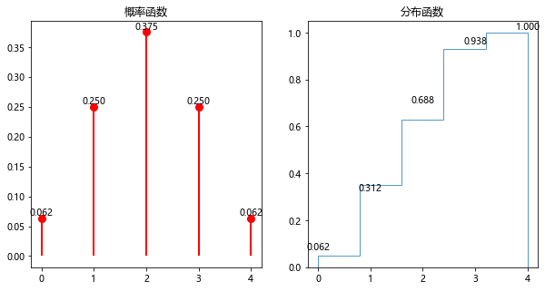
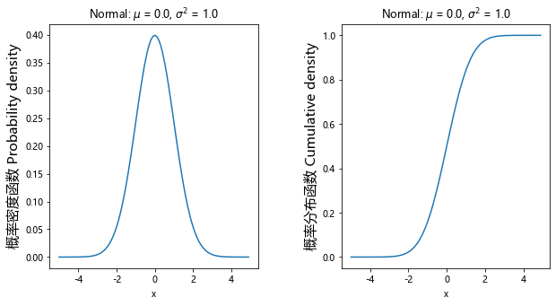
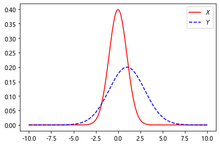
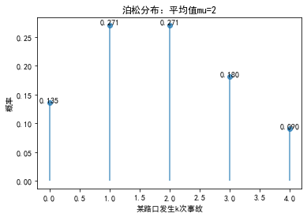
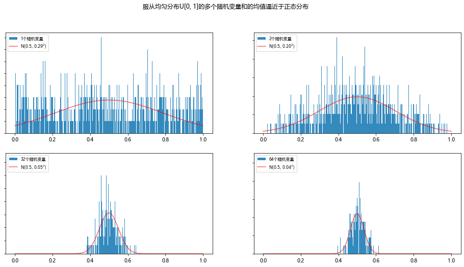
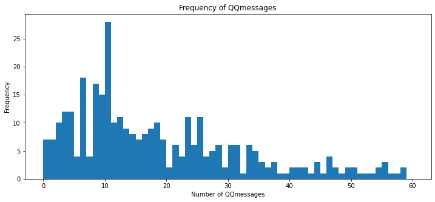
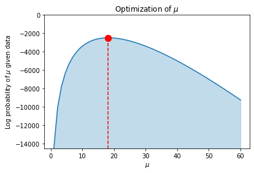
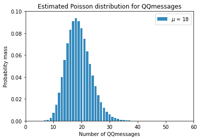
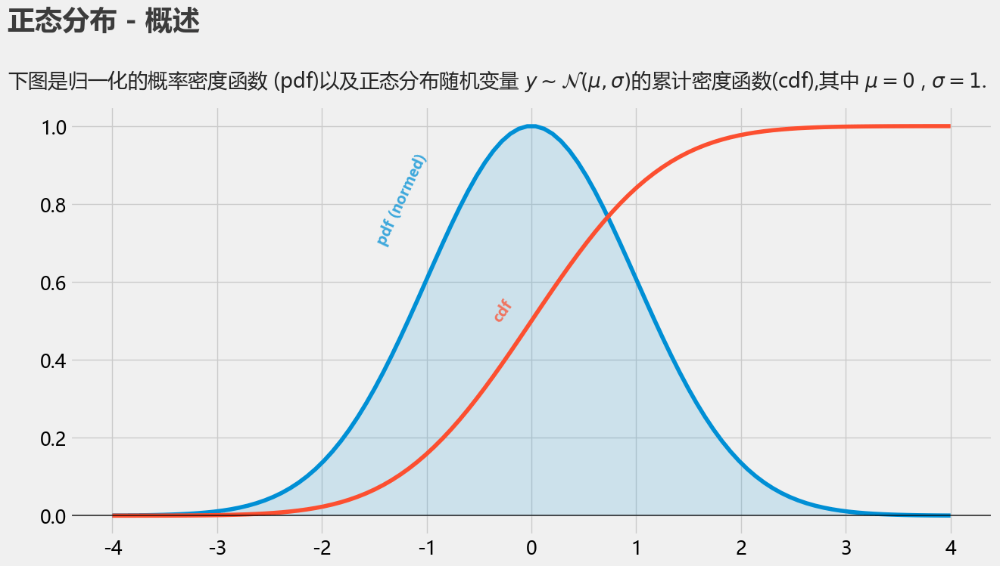
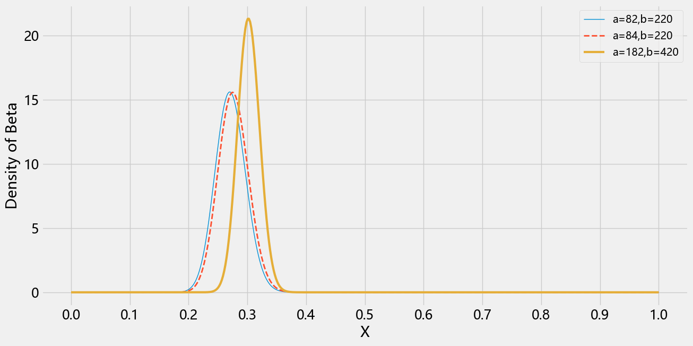

正文
7 描述统计规律 1——概率论基础
7.1.3 概率和频率
例 7.3 抛硬币
抛掷 10 次硬币并计算正面朝上的次数，随着抛掷次数越多，在 Python 中编写程序观察事件发生的频率和概率之间的关系。
1 2 3 4 5 6 7 8 9 10 11 12 13 14 15 16 17 18 19 20 21 22 import randomdef coin_trial ():""" 模拟抛掷 10 次硬币 """ 0 for i in range (10 ):if random.random() <= 0.5 :1 return headsdef simulate (n ):""" 模拟抛掷 10 * n 次硬币 """ for i in range (n):return (sum (trials) / n)
6.0
4.5
4.92
5.053
5.0029
5.01412
7.4.1 离散型随机变量
例 7.13 求概率函数 和概率分布函数
若某公司生产的某个产品中奖率是 50%, 求购买 4 个同样的产品中奖的概率函数和概率分布函数.(伯努利试验)
购买 4 个同样的产品为 n 重伯努利试验, 设随机变量 X 为中奖的奖品数, p 为中奖的概率, q 为不中奖的概率, 则概率函数 P n ( X = k ) = C n k p k q n − k P _ {n}(X = k) = C^{k} _ {n}p^kq^{n-k} P n ( X = k ) = C n k p k q n − k p = 1 2 p = \frac{1}{2} p = 2 1 q = 1 2 q = \frac{1}{2} q = 2 1
X 的取值
0
1
2
3
4
对应概率p k p _ {k} p k
1 1 6 \frac{1}{16} 1 6 1 1 4 \frac{1}{4} 4 1 3 8 \frac{3}{8} 8 3 1 4 \frac{1}{4} 4 1 1 1 6 \frac{1}{16} 1 6 1
概率分布函数如下
F ( 0 ) = P ( X = 0 ) = 1 1 6 F(0) = P(X = 0) = \frac{1}{16} F ( 0 ) = P ( X = 0 ) = 1 6 1
F ( 1 ) = P ( X = 0 ) + P ( X = 1 ) = 5 1 6 F(1) = P(X = 0) + P(X = 1) = \frac{5}{16} F ( 1 ) = P ( X = 0 ) + P ( X = 1 ) = 1 6 5
F ( 2 ) = P ( X = 0 ) + P ( X = 1 ) + P ( X = 2 ) = 1 1 1 6 F(2) = P(X = 0) + P(X = 1) + P(X = 2) = \frac{11}{16} F ( 2 ) = P ( X = 0 ) + P ( X = 1 ) + P ( X = 2 ) = 1 6 1 1
F ( 3 ) = P ( X = 0 ) + P ( X = 1 ) + P ( X = 2 ) + P ( X = 3 ) = 1 5 1 6 F(3) = P(X = 0) + P(X = 1) + P(X = 2) + P(X = 3) = \frac{15}{16} F ( 3 ) = P ( X = 0 ) + P ( X = 1 ) + P ( X = 2 ) + P ( X = 3 ) = 1 6 1 5
F ( 4 ) = P ( X = 0 ) + P ( X = 1 ) + P ( X = 2 ) + P ( X = 3 ) + P ( X = 4 ) = 1 F(4) = P(X = 0) + P(X = 1) + P(X = 2) + P(X = 3) + P(X = 4) = 1 F ( 4 ) = P ( X = 0 ) + P ( X = 1 ) + P ( X = 2 ) + P ( X = 3 ) + P ( X = 4 ) = 1
例 7.14 在 Python 中画出 例 7.13 的概率函数以及分布函数图
1 2 3 4 5 6 7 8 9 10 11 12 13 14 15 16 17 18 19 20 21 22 23 24 25 26 27 28 29 30 31 32 33 34 35 36 37 38 39 40 41 42 43 44 45 46 import numpy as npfrom scipy import statsimport matplotlib.pyplot as pltfrom matplotlib.font_manager import FontPropertiesfrom collections import Counter"font.sans-serif" ] = ["Microsoft YaHei" ]'axes.unicode_minus' ] = False def Discrete_pmf ():5 ) 1 / 16 , 1 / 4 , 3 / 8 , 1 / 4 , 1 / 16 ) 'custm' , values=(xk, pk)) 100 ) 2 , figsize=(10 , 5 )) "概率函数" )'ro' , ms=8 , mec='r' ) 0 , pk, colors='r' , linestyles='-' , lw=2 ) for i in xk: '%.3f' % pk[i], ha='center' , va='bottom' )"分布函数" )""" rv 数据序列(绘制的直方图高度服从这个数据序列, 标注的数据并不准确?) 5 组(0 1 2 3 4), density=ture 的意思是保证该面积的积分为 1 histtype: 直方图类型，‘bar’, ‘barstacked’, ‘step’, ‘stepfilled’ 蓝色 透明度 0.75 cumulative=True 频率累加 """ 5 , density=True , histtype='step' , facecolor='blue' ,0.75 , cumulative=True ) for i in xk: '%.3f' % pk1[i], ha='center' , va='bottom' )print (Counter(rv))if __name__ == "__main__" :
Counter({1: 30, 3: 30, 2: 28, 4: 7, 0: 5})

7.4.2 连续型随机变量
例 7.16 正态分布
在 Python 中输出正态分布概率密度函数 f ( x ) {\color{Red}{f(x)}} f ( x ) 概率分布函数 F ( x ) {\color{Blue}{F(x)}} F ( x )
如果一个随机变量 X 具有概率密度函数 , 则称随机变量 X 为正态分布随机变量, 并记为X ∼ N ( μ , σ 2 ) X\sim N(\mu , \sigma ^{2}) X ∼ N ( μ , σ 2 )
f ( x ) = 1 2 π σ e − ( x − μ ) 2 2 σ 2 , − ∞ < x < + ∞ {\color{Red}{f(x)}} = \frac{1}{\sqrt{2\pi}\sigma}e^{-\frac{(x-\mu)^2}{2\sigma ^2}}, -\infty < x < +\infty f ( x ) = √ 2 π σ 1 e − 2 σ 2 ( x − μ ) 2 , − ∞ < x < + ∞
下面代码模拟实现了一个均值为μ \mu μ σ 2 \sigma ^2 σ 2
1 2 3 4 5 6 7 8 9 10 11 12 13 14 15 16 17 18 19 20 21 22 23 24 25 26 27 28 29 30 31 32 import numpy as npfrom numpy import piimport matplotlib.pyplot as pltimport scipy.stats as statsdef test_norm_pmf ():0 1 5 , 5 , 0.1 ) 2 , figsize=(10 , 5 ))1 / ((np.sqrt(2 * pi) * sigma))) * np.exp(-(((x - mu) ** 2 )) / (2 * sigma * sigma)) 'Normal: $\mu$ = %.1f, $\sigma^2$ = %.1f' % (mu, sigma))'x' )'概率密度函数 Probability density' , fontsize=15 )0 , 1 ) 'Normal: $\mu$ = %.1f, $\sigma^2$ = %.1f' % (mu, sigma))'x' )'概率分布函数 Cumulative density' , fontsize=15 )0.4 )if __name__ == "__main__" :

7.8 高手点拨
Python 有一个很好的统计推断包, 即 Scipy 中的 stats, 该模块包含了许多概率分布的随机变量, 以及多种常用的数据统计函数, 常用的统计函数如下:
概念
中文名
英文名
说明
rvs
产生服从指定分布的随机数
Random variates of given size.
pdf
概率密度函数
Probability Density Function
连续性随机变量持有, P ( a < X ≤ b ) = ∫ a b f ( x ) d x P(a<X\le b)=\int _ {a}^{b} f(x)dx P ( a < X ≤ b ) = ∫ a b f ( x ) d x
pmf
概率质量函数
Probability Mass Function
离散型随机变量持有, 就是离散性随机变量的分布律, f ( x ) = P { X = x k } f(x)=P\{X = x _ {k}\} f ( x ) = P { X = x k }
cdf
累积分布函数
Cumulative Distribution Fuction
又称分布函数p ( X ≤ x ) p(X \le x) p ( X ≤ x )
ppf
百分点函数
Percent point function
cdf 的反函数
Sf
残差函数
Survival function
stats
返回期望和方差(mean(),var())
常见分布函数
名称
含义
beta
beta 分布
f
F 分布
gamma
伽马分布
poisson
泊松分布
hypergeom
超几何分布
lognorm
对数正态分布
binom
二项分布
uniform
均匀分布
chi2
卡方分布
cauchy
柯西分布
laplace
拉普拉斯分布
rayleigh
瑞利分布
t
学生 t 分布
norm
正态分布
expon
指数分布
例 7.23 获得 norm 函数的使用说明
正态分布随机函数
1 2 3 4 from scipy import statsfrom scipy.stats import normprint (norm.__doc__)
例 7.24 创建正态分布随机变量及绘图
1 2 3 4 5 6 7 8 9 10 11 12 from scipy import statsfrom scipy.stats import normimport numpy as npimport pylab as plt1.0 , scale = 2.0 ) 10 , 10 , 0.01 )'$X$' , color="red" )"b--" , label="$Y$" )

7.9 习题
(1) 泊松分布
已知某路口发生事故的概率是每天 2 次, 用 Python 编程求出此处一天发生 0、1、2、3、4 此事故的概率是多少？
P ( X = r ) = e − λ λ r r ! P(X=r)=\frac {e^{-\lambda} \lambda^{r}}{r!} P ( X = r ) = r ! e − λ λ r λ \lambda λ
X i X _{i} X i 0
1
2
3
4
P ( X = X i ) P(X=X _ {i}) P ( X = X i ) e − 2 e^{-2} e − 2 2 e − 2 2e^{-2} 2 e − 2 2 e − 2 2e^{-2} 2 e − 2 4 3 e − 2 \frac{4}{3}e^{-2} 3 4 e − 2 2 3 e − 2 \frac{2}{3}e^{-2} 3 2 e − 2
1 2 3 4 5 6 7 8 9 10 11 12 13 14 15 16 17 18 19 20 21 22 23 import numpy as npfrom scipy import statsimport matplotlib.pyplot as plt'font.sans-serif' ]=['SimHei' ]'axes.unicode_minus' ] = False 2 0 ,5 ,1 )print (pList4)'o' , linestyle='None' , alpha=0.75 )0 , pList4, alpha=0.75 )'某路口发生 k 次事故' )'概率' )for i in X4: '%.3f' % pList4[i], ha='center' , va='bottom' )'泊松分布：平均值 mu=%i' % mu4)
[0.13533528 0.27067057 0.27067057 0.18044704 0.09022352]

8 描述统计规律 2——随机变量与概率统计
切比雪夫不等式
P { ∣ X − μ ∣ ≥ ε } ≤ σ 2 ε 2 ( ∀ ε > 0 ) P\{\left | X - \mu \right | \ge \varepsilon \}\le \frac{\sigma^2}{\varepsilon^2}(\forall \varepsilon >0) P { ∣ X − μ ∣ ≥ ε } ≤ ε 2 σ 2 ( ∀ ε > 0 )
X X X μ \mu μ ε \varepsilon ε ( μ − ε , μ + ε ) (\mu - \varepsilon,\mu + \varepsilon) ( μ − ε , μ + ε ) 1 − σ 2 ε 2 1-\frac{\sigma^2}{\varepsilon^2} 1 − ε 2 σ 2
8.2 大数定律和中心极限定理
8.2.1 大数定律
对命题"当大量重复某一相同实验的时候, 其最后的实验结果可能会稳定在某一数值附近"给予严格论证.
名称
描述
切比雪夫大数定律
独立不同分布, 当 n 充分大时, n 个相互独立的随机变量的算术平均值将比较密集地聚集在它的数学期望附近
辛钦大数定律
独立同分布(切比雪夫大数定律的推论)
伯努利大数定律
一个事件 A 在 n 次独立重复实验中发生的频率n A n \frac{n _ {A}}{n} n n A
8.2.2 中心极限定理
在一定条件下, 充分多的相互独立的随机变量的算术平均值 将服从正态分布 , 不管这些随机变量本身服从什么分布.
名称
描述
列维——林德伯格
独立同分布
李雅普诺夫
独立不同分布
棣莫弗——拉普拉斯
二项分布，独立同分布的特殊情况，表明正态分布是二项分布的极限分布
定理 8.1 独立同分布的中心极限定理
前 n 项和S n = Σ k = 1 n X k ∼ N ( n μ , n σ 2 ) S _ {n}=\Sigma ^{n} _ {k=1}X _ {k} \sim N(n\mu, n\sigma ^2) S n = Σ k = 1 n X k ∼ N ( n μ , n σ 2 )
算数平均值X ¯ = 1 n Σ k = 1 n X k ∼ N ( μ , σ 2 n ) \bar X = \frac {1}{n}\Sigma ^{n} _ {k=1}X _ {k} \sim N(\mu, \frac {\sigma ^2}{n}) X ¯ = n 1 Σ k = 1 n X k ∼ N ( μ , n σ 2 )
算术平均值的标准化Y n = X ¯ − μ σ / n ∼ N ( 0 , 1 ) Y _ {n} = \frac {\bar{X}-\mu}{\sigma / \sqrt{n}} \sim N(0,1) Y n = σ / √ n X ¯ − μ ∼ N ( 0 , 1 )
无论{X k X _ {k} X k X ¯ \bar X X ¯ Y k Y _ {k} Y k
定理 8.2 棣莫弗——拉普拉斯定理
设X ∼ b ( n , p ) X \sim b(n,p) X ∼ b ( n , p )
P { a < x ≤ b } ≈ Φ ( b − n p n p ( 1 − p ) ) − Φ ( a − n p n p ( 1 − p ) ) P\{a < x \le b\}\approx \Phi(\frac{b-np}{\sqrt{np(1-p)}})-\Phi(\frac{a-np}{\sqrt{np(1-p)}}) P { a < x ≤ b } ≈ Φ ( √ n p ( 1 − p ) b − n p ) − Φ ( √ n p ( 1 − p ) a − n p )
我们曾用泊松分布近似地计算二项分布(p ≤ 0 . 1 p \le 0.1 p ≤ 0 . 1
当n ≥ 5 0 n \ge 50 n ≥ 5 0
例 8.13 验证中心极限定理
设有n n n X 1 , X 2 , . . . , X n X _ {1},X _ {2},...,X _ {n} X 1 , X 2 , . . . , X n U [ a , b ] U\left [a,b\right ] U [ a , b ] X ¯ = 1 n Σ k = 1 n X k ∼ N [ a + b 2 , ( b − a ) 2 1 2 n ] \bar X = \frac{1}{n}\Sigma^{n} _ {k=1}X _ {k}\sim N\left [ \frac{a+b}{2},\frac{(b-a)^2}{12n}\right] X ¯ = n 1 Σ k = 1 n X k ∼ N [ 2 a + b , 1 2 n ( b − a ) 2 ]
1 2 3 4 5 6 7 8 9 10 11 12 13 14 15 16 17 18 19 20 21 22 23 24 25 26 27 28 29 30 31 32 33 34 35 36 37 38 39 40 41 42 43 44 45 46 47 48 49 50 51 52 53 54 55 56 57 58 59 60 61 62 63 64 import numpy as npimport matplotlib.pyplot as pltimport matplotlib as mplfrom scipy import stats"font.sans-serif" ] = ["Microsoft YaHei" ]"axes.unicode_minus" ] = False 16 , 8 ))0.5 , 1.0 /12 def p_norm (nvr ):""" 绘制正态分布曲线 """ 0 , 1 , 128 ) 'r' , alpha=0.6 , label='N(${0:.1f}, {1:.2f}^2$)' .format (mu, sigma))'upper left' , prop={'size' : 8 })def sample (rv_num ):""" 对随机变量(X1+X2+...)进行一次采样 :return: 这些样本的平均值 """ 0 , scale=1 ) 0 for j in range (rv_num):1 / rv_numreturn xdef plotHist (Sample_num, rv_num, n_ ):""" 画出 n 个随机变量和样本的直方图 :param Sample_num: 样本数目 :param rv_num: 随机变量的个数 :param n_: 图例序号 """ 2 , 2 , n_)for i in range (Sample_num): 500 , density=True , color='#348ABD' , label='{}个随机变量' .format (rv_num))False )if __name__ == "__main__" :1000 1 , 2 , 32 , 64 ])for i in range (np.size(nvr)):1 )"服从均匀分布 U[0, 1]的多个随机变量和的均值逼近于正态分布" )

8.3 数理统计基本概念
在概率论 中, 我们是在假设随机变量的分布已知 的前提下去研究它的规律性, 但在数理统计 中, 研究的随机变量分布是未知 的
数理统计中, 通过对研究的随机变量进行重复独立地观察, 得到大量观察数据后进行统计分析(如数据是否服从某种分布, 其数据特征(数学期望, 方差等)如何, 从而对所研究的随机变量的分布做出种种推断)
8.4 常用的统计量
例 8.15 求样本的均值、方差和标准差的 3 种方法
1 2 3 4 5 6 7 import numpy as npfrom math import sqrtrange (0 , 9_000_000 )float (i) / 1_000_000 for i in nlist]len (nlist)
(1)定义法
1 2 3 4 5 6 7 8 9 10 sum1 = 0.0 0.0 for i in range (N):2 2
(4.499999500000001, 6.750000000000028, 2.5980762113533213)
(2)借助 Numpy 的向量运算
1 2 3 4 5 6 7 8 9 narray = np.array(nlist)sum ()sum ()2
(4.4999994999999995, 6.749999999999915, 2.5980762113532996)
(3)借助 Numpy 函数
1 2 3 4 5 mean = np.mean(nlist)
(4.4999994999999995, 6.749999999999914, 2.5980762113532996)
8.4 最大似然估计(MLE)
对于已经出现的样本值x 1 , x 2 , . . . , x n x _ {1}, x _ {2},...,x _ {n} x 1 , x 2 , . . . , x n θ \theta θ
似然函数L ( x ∣ θ ) L(x|\theta) L ( x ∣ θ ) L ( x 1 , x 2 , . . . , x n ∣ θ ) L(x _ {1}, x _ {2}, ..., x _ {n} | \theta ) L ( x 1 , x 2 , . . . , x n ∣ θ )
L ( x 1 , x 2 , . . . , x n ∣ θ ) L(x _ {1}, x _ {2}, ..., x _ {n} | \theta ) L ( x 1 , x 2 , . . . , x n ∣ θ ) Π i = 1 n θ x i ( 1 − θ ) 1 − x i ) \Pi ^{n} _ {i=1}\theta ^ {x _ {i}}(1-\theta)^{1-x _ {i}}) Π i = 1 n θ x i ( 1 − θ ) 1 − x i )
通过对θ \theta θ θ \theta θ L ( x 1 , x 2 , . . . , x n ∣ θ ) L(x _ {1}, x _ {2}, ..., x _ {n} | \theta ) L ( x 1 , x 2 , . . . , x n ∣ θ )
参考视频: 【概率统计】最大似然估计
8.5 最大后验估计(MAP)
在最大似然估计的基础上, 添加了先验信息, 在样本较少时有用
a r g m a x [ l n p ( θ ) + Σ i = 1 n l n p ( x i ∣ θ ) ] argmax \left [{\color{Red} {ln p(\theta)} + {\color{Blue}{\Sigma ^{n} _ {i=1}ln p(x _ {i}|\theta)}}} \right ] a r g m a x [ l n p ( θ ) + Σ i = 1 n l n p ( x i ∣ θ ) ] 先验项 + 与 MLE 等效 , 利用求导等方式, 判断当θ \theta θ
参考视频: 极大似然与最大后验的关系-贝叶斯法的视频超分辨率
8.6 综合实例 1——贝叶斯用户满意度预测
1.问题描述
根据一些已有的汽车汽车评测满意度测评数据集，可初步了解用户对于该类型汽车的满意程度。
2.数据准备阶段
特征属性
属性值
属性说明
Buying
vhigh, high, med, low
买入价
Maint
vhigh, high, med, low
维护费
Doors
2,3,4,5more
车门数
Persons
vhigh, high, med, low
可容纳人数
Lug-boot
small, med, big
后备箱大小
Safety
low, med, high
安全性
1 2 3 4 5 6 7 8 9 10 11 12 13 14 15 16 17 18 19 20 21 22 23 24 25 26 27 28 29 30 31 32 33 34 35 36 37 38 39 40 41 42 43 44 45 46 47 48 import numpy as npimport randomimport pandas as pd'buying' , 'maint' , 'doors' , 'persons' ,'lug-boot' ,'safety' ,'label' ]def getDataSet (file ):""" 从数据集中获得数据 """ open (file)for line in fr.readlines():',' ) return dfdef getTrainTest (data, trainNum ):""" 随机抽取数据,将数据集分成训练集和测试集 :return: 训练集, 测试集 """ """ 语法：random.sample(sequence, k) 参数： sequence: 可以是一个列表，元组，字符串，或集合 k: 一个整数值，它指定一个样本的长度 返回：从序列中选择元素的 k 长度的新列表。 """ range (len (data)), trainNum)1 for i in range (1 ,len (data)):if (j < trainNum and i == choose[j]):0 ]]=data.iloc[i]1 else :0 ]]=data.iloc[i]return dftrain, dftest
3.创建一个实现朴素贝叶斯模型的类 NBClassify
4.定义训练函数 train()
5.数据预测
1 2 3 4 5 6 7 8 9 10 11 12 13 14 15 16 17 18 19 20 21 22 23 24 25 26 27 28 29 30 31 32 33 34 35 36 37 38 39 40 41 42 43 44 45 46 47 48 49 50 51 52 53 54 55 56 57 58 59 60 61 62 63 64 65 66 67 68 69 70 71 72 73 74 75 76 77 78 79 80 81 82 83 84 85 86 87 88 89 90 91 class NBClassify (object ):""" 定义朴素贝叶斯模型 """ def __init__ (self ):None None def train (self,df ):""" 4.定义训练函数 利用训练数据分别计算类先验概率和似然概率 """ self ._tagProbablity = df['label' ].value_counts(value for value in df['label' ])print ("各类别的先验概率(各类别占比)：\n" , self ._tagProbablity)for column in df.columns: del dictFeaturesBase['label' ]'label' ])for key in dictFeatures.keys():for key in dictFeaturesBase])for key, value in dictFeatures.items():for subkey in value.keys():for x in dictFeaturesBase[subkey].keys()])for i in range (0 , len (df)):'label' ] for feature in columnsName[0 :6 ]: if dictFeatures[label][feature][fvalue] == None :1 else :1 for tag, featuresDict in dictFeatures.items():for featureName, featureValueDict in featuresDict.items():for featureKey, featureValues in featureValueDict.items():if featureValues == None :1 for tag, featuresDict in dictFeatures.items():for featureName, featureValueDict in featuresDict.items():sum ([x for x in featureValueDict.values() if x != None ])for featureKey, featureValues in featureValueDict.items():self ._featuresProbablity = dictFeaturesprint ("每个类别下每种特征对应值的似然概率:\n" , dictFeatures)def classify (self, featureTuple ):""" 对测试集进行预测 :return: 最大后验概率的类别 """ for tag, featuresDict in self ._featuresProbablity.items():0 for feature,featureValueDict in featuresDict.items():str (featureTuple[i])self ._featuresProbablity[tag][feature][featureValue])1 1 for iNum in iNumList:self ._tagProbablity[tag] * conditionProbabilitysorted (resultDict.items(), key=lambda x: x[1 ], reverse=True )return resultList[0 ][0 ]
6.主程序
1 2 3 4 5 6 7 8 9 10 11 12 13 14 15 16 17 18 if __name__ == '__main__' :'car.txt' )1500 )0 for i in range (0 , len (testData)):0 :6 ])if testData.iloc[i][6 ] != result: 1 print ("精度为 %f" % ((float (len (testData)) - float (errorCount)) / len (testData)))
各类别的先验概率：
unacc 0.701134
acc 0.223482
good 0.040027
vgood 0.035357
Name: label, dtype: float64
每个类别下每种特征对应值的似然概率:
{'unacc': {'buying': {'low': 0.21693625118934348, 'med': 0.22645099904852523, 'vhigh': 0.29590865842055186, 'high': 0.26070409134157946}, 'maint': {'med': 0.23311132254995243, 'vhigh': 0.29971455756422455, 'high': 0.25499524262607043, 'low': 0.21217887725975262}, 'doors': {'4': 0.24262607040913417, '2': 0.26831588962892483, '5more': 0.2407231208372978, '3': 0.2483349191246432}, 'persons': {'4': 0.2597526165556613, '2': 0.47573739295908657, 'more': 0.26450999048525214}, 'lug-boot': {'med': 0.3273073263558516, 'big': 0.3016175071360609, 'small': 0.37107516650808753}, 'safety': {'med': 0.29305423406279735, 'high': 0.2340627973358706, 'low': 0.47288296860133205}}, 'acc': {'buying': {'low': 0.2417910447761194, 'med': 0.2955223880597015, 'vhigh': 0.18507462686567164, 'high': 0.27761194029850744}, 'maint': {'med': 0.3044776119402985, 'vhigh': 0.1791044776119403, 'high': 0.27761194029850744, 'low': 0.23880597014925373}, 'doors': {'4': 0.2716417910447761, '2': 0.21791044776119403, '5more': 0.2626865671641791, '3': 0.24776119402985075}, 'persons': {'4': 0.5238095238095238, '2': 0.002976190476190476, 'more': 0.4732142857142857}, 'lug-boot': {'med': 0.35522388059701493, 'big': 0.382089552238806, 'small': 0.2626865671641791}, 'safety': {'med': 0.4791666666666667, 'high': 0.5178571428571429, 'low': 0.002976190476190476}}, 'vgood': {'buying': {'low': 0.5636363636363636, 'med': 0.4, 'vhigh': 0.01818181818181818, 'high': 0.01818181818181818}, 'maint': {'med': 0.3888888888888889, 'vhigh': 0.018518518518518517, 'high': 0.18518518518518517, 'low': 0.4074074074074074}, 'doors': {'4': 0.32075471698113206, '2': 0.16981132075471697, '5more': 0.3018867924528302, '3': 0.20754716981132076}, 'persons': {'4': 0.4444444444444444, '2': 0.018518518518518517, 'more': 0.5370370370370371}, 'lug-boot': {'med': 0.37037037037037035, 'big': 0.6111111111111112, 'small': 0.018518518518518517}, 'safety': {'med': 0.01818181818181818, 'high': 0.9636363636363636, 'low': 0.01818181818181818}}, 'good': {'buying': {'low': 0.6612903225806451, 'med': 0.3064516129032258, 'vhigh': 0.016129032258064516, 'high': 0.016129032258064516}, 'maint': {'med': 0.3225806451612903, 'vhigh': 0.016129032258064516, 'high': 0.016129032258064516, 'low': 0.6451612903225806}, 'doors': {'4': 0.2833333333333333, '2': 0.23333333333333334, '5more': 0.26666666666666666, '3': 0.21666666666666667}, 'persons': {'4': 0.5081967213114754, '2': 0.01639344262295082, 'more': 0.47540983606557374}, 'lug-boot': {'med': 0.3333333333333333, 'big': 0.35, 'small': 0.31666666666666665}, 'safety': {'med': 0.5409836065573771, 'high': 0.4426229508196721, 'low': 0.01639344262295082}}}
精度为 0.848485
7.利用 scikit-mean 库直接实现朴素贝叶斯方法
种类
说明
适用
GaussianNB
假设每个标签的数据都服从简单的正态分布
样本的特征的分布大部分是连续值
MultinationalNB
假设特征是由一个简单多项式分布生成的
用于描述出现次数或者出现比例的特征
BernoulliNB
假设特征的先验概率为二元伯努利分布
样本特征是二元离散值或很稀疏的多元离散值
1 2 3 4 5 6 7 8 9 10 11 12 13 14 15 16 17 18 19 20 21 22 23 24 25 26 27 28 29 30 31 32 33 34 35 36 37 38 39 40 41 42 43 44 45 46 47 48 49 50 51 import pandas as pdimport numpy as npimport randomfrom sklearn.naive_bayes import BernoulliNB'buying' , 'maint' , 'doors' , 'persons' ,'lug-boot' ,'safety' ,'label' ]def getDataSet (file ):""" 从数据集中获得数据，并进行整理 """ open (file)for line in fr.readlines():',' )'vhigh' : 0 , 'high' : 1 , 'med' : 2 , 'low' : 3 },'vhigh' : 0 , 'high' : 1 , 'med' : 2 , 'low' : 3 },'2' : 0 , '3' : 1 , '4' : 2 , '5more' : 3 },'2' : 0 , '4' : 1 , 'more' : 2 },'small' : 0 , 'med' : 1 , 'big' : 2 },'high' : 0 , 'med' : 1 , 'low' : 2 },'unacc' :0 ,'acc' : 1 ,'good' : 2 ,'vgood' :3 } ]for i in range (0 ,7 ):map (feature_codes[i])return dfdef getTrainTest (data, trainNum ):""" 随机抽取数据,将数据集分成训练集和测试集 """ range (len (data)), trainNum)1 for i in range (1 ,len (data)):if (j < trainNum and i == choose[j]):0 ]]=data.iloc[i]1 else :0 ]]=data.iloc[i]return dftrain, dftest
1 2 dfData = getDataSet('car.txt' )
buying
maint
doors
persons
lug-boot
safety
label
0
0
0
0
0
0
2
0
1
0
0
0
0
0
1
0
2
0
0
0
0
0
0
0
3
0
0
0
0
1
2
0
4
0
0
0
0
1
1
0
...
...
...
...
...
...
...
...
1723
3
3
3
2
1
1
2
1724
3
3
3
2
1
0
3
1725
3
3
3
2
2
2
0
1726
3
3
3
2
2
1
2
1727
3
3
3
2
2
0
3
1728 rows × 7 columns
1 2 3 4 5 6 7 8 1500 )1 ]1 ], dtype="|S6" )1 ]1 ], dtype="|S6" )
buying
maint
doors
persons
lug-boot
safety
0
0
0
0
0
0
1
1
0
0
0
0
0
0
2
0
0
0
0
1
1
3
0
0
0
0
2
2
4
0
0
0
0
2
1
...
...
...
...
...
...
...
1494
3
3
3
2
1
1
1495
3
3
3
2
1
0
1496
3
3
3
2
2
2
1497
3
3
3
2
2
1
1498
3
3
3
2
2
0
1499 rows × 6 columns
array([b'0', b'0', b'0', ..., b'0', b'2', b'3'], dtype='|S6')
buying
maint
doors
persons
lug-boot
safety
2
0
0
0
0
1
2
3
0
0
0
0
1
0
11
0
0
0
1
1
0
26
0
0
1
0
1
2
29
0
0
1
0
2
1
...
...
...
...
...
...
...
1458
3
3
2
0
2
0
1460
3
3
2
1
0
0
1465
3
3
2
1
2
0
1476
3
3
3
0
0
0
1489
3
3
3
1
2
1
204 rows × 6 columns
1 2 3 4 5 6 7 8 9 10 11 12 13 14 15 16 """ alpha : 浮点数, 可不填 (默认为 1.0) 拉普拉斯或利德斯通平滑的参数λ，如果设置为 0 则表示完全没有平滑选项。 但是需要注意的是，平滑相当于人为给概率加上一些噪音， 因此λ设置得越大，伯努利朴素贝叶斯的精确性会越低（虽然影响不是非常大），布里尔分数也会逐渐升高。 binarize : 浮点数或 None，可不填，默认为 0 将特征二值化的阈值，如果设定为 None，则假定为特征已经被二值化完毕 fit_prior : 布尔值, 可不填 (默认为 True) 是否学习先验概率 P(Y=c)。如果设置为 false，则不使用先验概率，而使用统一先验概率（uniform prior）， 即认为每个标签类出现的概率是 1/n_classes class_prior：形似数组的结构，结构为(n_classes, )，可不不填（默认为 None） """
array([b'0', b'0', b'0', b'0', b'0', b'0', b'0', b'0', b'0', b'0', b'0',
b'0', b'0', b'0', b'0', b'0', b'0', b'0', b'0', b'1', b'0', b'0',
b'0', b'0', b'0', b'1', b'0', b'0', b'0', b'0', b'0', b'0', b'1',
b'0', b'1', b'0', b'0', b'0', b'0', b'0', b'0', b'1', b'0', b'0',
b'0', b'0', b'0', b'0', b'0', b'0', b'0', b'0', b'0', b'0', b'0',
b'1', b'0', b'0', b'0', b'0', b'0', b'1', b'0', b'0', b'0', b'1',
b'0', b'0', b'0', b'0', b'0', b'0', b'1', b'1', b'0', b'0', b'0',
b'0', b'1', b'1', b'0', b'0', b'1', b'0', b'0', b'0', b'1', b'0',
b'0', b'0', b'0', b'1', b'0', b'0', b'0', b'0', b'0', b'0', b'0',
b'1', b'1', b'0', b'1', b'0', b'0', b'0', b'0', b'0', b'0', b'0',
b'0', b'1', b'1', b'0', b'0', b'0', b'0', b'0', b'0', b'0', b'0',
b'0', b'0', b'0', b'0', b'0', b'1', b'0', b'0', b'0', b'0', b'0',
b'0', b'0', b'1', b'0', b'1', b'0', b'0', b'0', b'0', b'0', b'0',
b'0', b'0', b'1', b'0', b'1', b'0', b'0', b'0', b'1', b'0', b'1',
b'0', b'0', b'0', b'0', b'0', b'0', b'0', b'0', b'0', b'0', b'1',
b'1', b'1', b'0', b'0', b'0', b'0', b'0', b'1', b'0', b'0', b'0',
b'0', b'0', b'0', b'0', b'0', b'0', b'0', b'0', b'0', b'0', b'0',
b'0', b'0', b'0', b'1', b'1', b'0', b'0', b'0', b'0', b'1', b'0',
b'0', b'0', b'1', b'1', b'0', b'0'], dtype='|S1')
1 print ('精度为：%f ' % np.mean(predicted == test_Y))
精度为：0.774725
8.7 综合实例 2——最大似然法求解模型参数
数据集 QQ_data.txt 中会收集每天发出 QQ 消息的个数, 利用最大似然法估计总体分布的模型参数
(1) 读取数据集"QQ_data.csv", 显示数据分布情况
1 2 3 4 5 6 7 8 9 10 import pandas as pdimport matplotlib.pyplot as plt'QQ_data.csv' ) 12 ,5 ))'Frequency of QQmessages' )'Number of QQmessages' )'Frequency' )'numbers' ].values,range =[0 , 60 ], bins=60 , histtype='stepfilled' )

(2) 利用最大似然估计法求出参数μ \mu μ
似然函数定义:
L ( x ; μ ) = Π i = 1 n P ( x i ; μ ) L(x;\mu)=\Pi^{n} _ {i=1}P(x _ {i};\mu) L ( x ; μ ) = Π i = 1 n P ( x i ; μ )
为了运算方便, 通常等式两边同取对数:
l n L ( x ; μ ) = Σ i = 1 n l n P ( x i ; μ ) lnL(x;\mu)=\Sigma^{n} _ {i=1}lnP(x _ {i};\mu) l n L ( x ; μ ) = Σ i = 1 n l n P ( x i ; μ )
1 2 3 4 5 6 7 8 9 10 11 12 13 14 15 16 17 18 19 20 21 22 23 24 25 26 27 28 29 30 31 32 33 34 35 import matplotlib.pyplot as pltimport numpy as npimport pandas as pdimport scipyimport scipy.stats as statsimport scipy.optimize as optimport statsmodels.api as sm'QQ_data.csv' ) 'numbers' ].values'ignore' )def poisson_logprob (mu, sign=-1 ):""" :params mu: 泊松模型的参数值 :params sign: 系数 :return: 观测数据的总似然值 """ print (" 参数 mu: " , mu)""" 方法 stats.poisson.logpmf(y_obs, mu=mu) 计算在给定点 y_obs 值上服从泊松分布(参数值为 mu)的概率对数值, 然后使用 np.sum 求和得到似然函数值 """ return np.sum (sign * stats.poisson.logpmf(y_obs, mu=mu))""" 方法 opt.minimize_scalar 通过不断迭代参数(mu), 求出(似然)函数的最小值, 因此在(似然)函数前加上负号(就可以求出(似然)函数的最大值) https://vimsky.com/examples/usage/python-scipy.optimize.minimize_scalar.html """ print ("参数 mu 的估计值: %s" % freq_results['x' ])
参数 mu: 0.0
参数 mu: 1.0
参数 mu: 2.6180339999999998
参数 mu: 5.2360680251559995
参数 mu: 5.273849359457559
参数 mu: 5.334980842922849
参数 mu: 9.032120508519583
参数 mu: 15.014218190203728
参数 mu: 14.555935077084984
参数 mu: 24.69345563048985
参数 mu: 15.014218190203728
参数 mu: 18.71135779832006
参数 mu: 20.996315778882625
参数 mu: 18.38937216738971
参数 mu: 18.18406664294854
参数 mu: 18.217827603959925
参数 mu: 18.219046315052577
参数 mu: 18.2189342781152
参数 mu: 18.218934914073003
参数 mu: 18.21893518372324
参数 mu: 18.218934644422767
参数 mu 的估计值: 18.218934644422767
(3) 直观地描述利用似然函数优化参数μ \mu μ
1 2 3 4 5 6 7 8 9 10 11 12 13 14 15 16 x = np.linspace(1 , 60 )min ([poisson_logprob(i, sign=1 ) for i in x])max ([poisson_logprob(i, sign=1 ) for i in x])6 ,4 ))1 ) for mu in x])1 ) for mu in x], \'#348ABD' ,alpha=0.3 )'x' ], y_max, y_min, colors='red' , linestyles='dashed' )'x' ], y_max, s=110 , c='red' , zorder=3 )0 )'Optimization of $\mu$' )'$\mu$' )'Log probability of $\mu$ given data' )

(4) 画出求得μ \mu μ
1 2 3 4 5 6 7 8 9 10 11 12 x_lim = 60 int (freq_results['x' ])for i in np.arange(x_lim):'#348ABD' ) 0 , x_lim)0 , 0.1 )'Estimated Poisson distribution for QQmessages' ) 'Number of QQmessages' ) 'Probability mass' )'$\mu$ = %s' % mu])

8.9 习题
(1) 编写朴素贝叶斯分类器
数据包含 3 中类别, 分别是{感冒, 过敏, 脑震荡}, 预测一个打喷嚏的建筑工人诊断结果
根据贝叶斯公式:
P ( A ∣ B ) = P ( A ) P ( B ∣ A ) P ( B ) {\color{Red}{P(A|B)}}={\color{Blue}{P(A)}}{\color{Green}{\frac{P(B|A)}{P(B)}}} P ( A ∣ B ) = P ( A ) P ( B ) P ( B ∣ A )
先验概率 = 后验概率 * 可能性函数
转换成分类任务的表达式:
P(类别|特征)=P(类别)\frac{P(特征|类别)}{P(特征)}
则有:
P(过敏|打喷嚏,建筑工人)=P(过敏)\frac{P(打喷嚏|过敏)\cdot {\color{Red}{P(建筑工人|过敏)}}}{P(打喷嚏,建筑工人)}
其中:
P(打喷嚏,建筑工人)=P(过敏)P(打喷嚏|过敏){\color{Red}{P(建筑工人|过敏)}}+
P(感冒)P(打喷嚏|感冒)P(建筑工人|感冒)+P(脑震荡){\color{Red}{P(打喷嚏|脑震荡)}}P(建筑工人|脑震荡)
=P(感冒)P(打喷嚏|感冒)P(建筑工人|感冒)
= 1 2 ∗ 2 3 ∗ 1 3 =\frac{1}{2}*\frac{2}{3}*\frac{1}{3} = 2 1 ∗ 3 2 ∗ 3 1
= 1 9 =\frac{1}{9} = 9 1
预测这个打喷嚏的建筑工人得了感冒
1 2 3 4 5 6 7 8 import numpy as npimport pandas as pdfrom sklearn.naive_bayes import BernoulliNB"护士" , "打喷嚏" , "感冒" ], ["农夫" , "打喷嚏" , "过敏" ], ["建筑工人" , "头痛" , "脑震荡" ],"建筑工人" , "头痛" , "感冒" ], ["教师" , "打喷嚏" , "感冒" ], ["教师" , "头痛" , "脑震荡" ]])"职业" , "症状" , "类别" ])
职业
症状
类别
0
护士
打喷嚏
感冒
1
农夫
打喷嚏
过敏
2
建筑工人
头痛
脑震荡
3
建筑工人
头痛
感冒
4
教师
打喷嚏
感冒
5
教师
头痛
脑震荡
1 2 3 4 5 6 feature_codes = [{'护士' : 0 , '农夫' : 1 , '建筑工人' : 2 , '教师' : 3 },'打喷嚏' : 0 , '头痛' : 1 },'感冒' : 0 , '过敏' : 1 , '脑震荡' : 2 }]for i in range (0 , len (df.columns)):map (feature_codes[i])
职业
症状
类别
0
0
0
0
1
1
0
1
2
2
1
2
3
2
1
0
4
3
0
0
5
3
1
2
1 2 3 train_X = df[['职业' , '症状' ]]'类别' ]
职业
症状
0
0
0
1
1
0
2
2
1
3
2
1
4
3
0
5
3
1
1 2 test_X = pd.DataFrame(np.array([["2" , "0" ]]), columns=["职业" , "症状" ])
1 2 3 clf = BernoulliNB()
array([0], dtype=int64)
9 随机变量的几种分布
先列个表格把几种分布整理下?
分布律
名称
记作
数学期望E ( X ) E(X) E ( X )
方差D ( X ) D(X) D ( X )
备注
P { X = 0 } = 1 − p , P { X = 1 } = p P\{X=0\}=1-p, P\{X=1\}=p P { X = 0 } = 1 − p , P { X = 1 } = p 0-1 分布
X ∼ B ( 1 , p ) X\sim B(1,p) X ∼ B ( 1 , p ) p p p p ( 1 − p ) p(1-p) p ( 1 − p ) n 为 1 的二项分布,例如抛一次硬币
P { X = k } = C n k p k q 1 − k P\{X=k\}=C^{k} _ {n}p^kq^{1-k} P { X = k } = C n k p k q 1 − k 二项分布
X ∼ B ( n , p ) X\sim B(n,p) X ∼ B ( n , p ) n p np n p n p ( 1 − p ) np(1-p) n p ( 1 − p ) 事件{X=k}即为“n 次试验中事件 A 恰好发生 k 次”
P { X = k } = p q k − 1 P\{X=k\}=pq^{k-1} P { X = k } = p q k − 1 几何分布
X ∼ G E ( p ) X\sim GE(p) X ∼ G E ( p ) 1 p \frac{1}{p} p 1 1 − p p 2 \frac{1-p}{p^2} p 2 1 − p 在 n 次伯努利试验中，试验 k 次才得到第一次成功的机率
P { X = k } = C M k C N − M n − k C N n P\{X=k\}=\frac{C^{k} _ {M}C^{n-k} _ {N-M}}{C^{n} _ {N}} P { X = k } = C N n C M k C N − M n − k 超几何分布
X ∼ H ( N , n , M ) X\sim H(N,n,M) X ∼ H ( N , n , M ) 略
略
描述了从有限 N 个物件（其中包含 M 个指定种类的物件）中抽出 n 个物件，成功抽出该指定种类的物件的次数（不放回）
P { X = k } = λ k k ! e − λ P\{X=k\}=\frac{\lambda ^k}{k!}e^{-\lambda} P { X = k } = k ! λ k e − λ 泊松分布
X ∼ π ( λ ) X\sim \pi(\lambda) X ∼ π ( λ ) λ \lambda λ λ \lambda λ 适合于描述单位时间内随机事件发生的次数, 可用泊松分布近似地计算二项分布(p ≤ 0 . 1 p \le 0.1 p ≤ 0 . 1
分布函数
名称
记作
数学期望E ( X ) E(X) E ( X )
方差D ( X ) D(X) D ( X )
备注
f ( x ) = 1 b − a , a < x < b ; 0 , f(x)=\frac{1}{b-a},a<x<b;0, f ( x ) = b − a 1 , a < x < b ; 0 , 均匀分布
X ∼ ( a , b ) X\sim (a,b) X ∼ ( a , b ) a + b 2 \frac{a+b}{2} 2 a + b ( a − b ) 2 1 2 \frac{(a-b)^2}{12} 1 2 ( a − b ) 2 也叫矩形分布
$f(x
\mu,\sigma)=\frac{1}{\sqrt{2\pi \sigma2}}e {-\frac{(x-\mu)2}{2\sigma 2}}$
正态分布
X ∼ N ( μ , σ 2 ) X\sim N(\mu,\sigma^2) X ∼ N ( μ , σ 2 ) μ \mu μ σ 2 \sigma^2 σ 2
f ( x ) = λ e − λ x ( x > 0 ) ; 0 , f(x)=\lambda e^{-\lambda x}(x>0); 0, f ( x ) = λ e − λ x ( x > 0 ) ; 0 , 指数分布
X ∼ E ( λ ) X\sim E(\lambda) X ∼ E ( λ ) 1 λ \frac{1}{\lambda} λ 1 1 λ 2 \frac{1}{\lambda^2} λ 2 1 唯一具有"无记忆性"的分布, 在已知x > s x>s x > s P ( x > s + t ) = P ( x > t ) P(x>s+t)=P(x>t) P ( x > s + t ) = P ( x > t )
$f(x
n)=\frac{1}{x{\frac{n}{2}\Gamma(\frac{n}{2})}}x {\frac{n}{2}-1}e^{-\frac{x}{2}},x>0;0,x\le 0$
卡方分布
U ∼ χ 2 ( n ) U\sim \chi^2(n) U ∼ χ 2 ( n ) n
2n
略
t 分布
Z ∼ t ( n ) Z\sim t(n) Z ∼ t ( n ) 0(偶函数)
X ∼ N ( 0 , 1 ) , Y ∼ χ 2 ( n ) , t = X Y / n X\sim N(0,1),Y\sim \chi^2(n), t=\frac{X}{Y/n} X ∼ N ( 0 , 1 ) , Y ∼ χ 2 ( n ) , t = Y / n X n → ∞ n\to \infty n → ∞
略
F 分布
F ∼ F ( n 1 , n 2 F\sim F(n _ {1},n _ {2} F ∼ F ( n 1 , n 2 设U ∼ χ 2 ( n 1 ) , V ∼ χ 2 ( n 2 ) U\sim \chi^2(n _ {1}),V\sim \chi^2(n _ {2}) U ∼ χ 2 ( n 1 ) , V ∼ χ 2 ( n 2 ) U , V U,V U , V F = U / n 1 V / n 2 F=\frac{U/n _ {1}}{V/ n _ {2}} F = V / n 2 U / n 1
略
Γ \Gamma Γ X ∼ Γ ( α , β ) X\sim \Gamma(\alpha,\beta) X ∼ Γ ( α , β ) “指数分布”和“卡方分布”都是伽马分布的特例
略
beta 分布
X ∼ B e t a ( a , b ) X\sim Beta(a,b) X ∼ B e t a ( a , b ) α α + β \frac{\alpha}{\alpha+\beta} α + β α α β ( α + β ) 2 ( α + β + 1 ) \frac{\alpha\beta}{(\alpha+\beta)^2(\alpha+\beta+1)} ( α + β ) 2 ( α + β + 1 ) α β 可以看作是一个概率的概率分布,x x x α − 1 \alpha-1 α − 1 β − 1 \beta-1 β − 1
9.1.3 应用 Python 函数库计算正态分布
1.产生正态随机变量
1 2 3 4 5 6 7 from scipy.stats import normprint (norm.rvs(), end="\n\n" ) print (norm.rvs(size=10 ), end="\n\n" ) print (norm.rvs(loc=10 , scale=0.1 ), end="\n\n" )
-0.15606449742155645
[ 1.41915385e+00 9.05180924e-01 -1.65805601e+00 -8.70872873e-05
6.25728572e-01 3.07949177e+00 5.22917613e-01 -6.20181230e-01
-1.23960758e+00 7.47657082e-02]
9.901121362547995
2.计算正态分布概率
1 2 3 4 5 from scipy.stats import normprint ("P(X < 0.3) = {}" .format (norm.cdf(0.3 )))print ("P(-0.2 < X < 0.2) = {}" .format (norm.cdf(0.2 ) - norm.cdf(-0.2 )))
P(X < 0.3) = 0.6179114221889526
P(-0.2 < X < 0.2) = 0.15851941887820603
3.标准正态分布函数图形
1 2 3 4 5 6 7 8 9 10 11 12 13 14 15 16 17 18 19 20 21 22 23 24 25 26 27 28 29 30 31 32 33 34 35 36 37 38 39 40 41 42 43 44 45 46 47 48 49 50 51 import numpy as npimport scipy.stats as statsimport matplotlib.pyplot as pltimport matplotlib.style as styleimport matplotlib as mplfrom IPython.core.display import HTML""" 其实%matplotlib inline 这一句是 IPython 的魔法函数，可以在 IPython 编译器里直接使用，作用是内嵌画图，省略掉 plt.show()这一步，直接显示图像。 如果不加这一句的话，我们在画图结束之后需要加上 plt.show()才可以显示图像。 """ "font.sans-serif" ] = ["Microsoft YaHei" ]'axes.unicode_minus' ] = False 'fivethirtyeight' )"figure.figsize" ] = (14 , 7 )100 ) 4 , 4 , 100 ), 4 , 4 , 100 )) max (stats.norm.pdf(np.linspace(-3 , 3 , 100 ))),4 , 4 , 100 ),4 , 4 , 100 )) max (stats.norm.pdf(np.linspace(-3 , 3 , 100 ))),.15 ,4 , 4 , 100 ), 4 , 4 , 100 )),1.5 , y=.7 , s="pdf (normed)" , rotation=65 , .75 , weight="bold" , color="#008fd5" ).4 , y=.5 , s="cdf" , rotation=55 , alpha=.75 , "bold" , color="#fc4f30" )'both' , which = 'major' , labelsize = 18 )0 , color = 'black' , linewidth = 1.3 , alpha = .7 )5 , y = 1.25 , s = "正态分布 - 概述" ,26 , weight = 'bold' , alpha = .75 )5 , y = 1.1 , '下图是归一化的概率密度函数 (pdf)以及正态分布随机变量 $ y \sim \mathcal{N}(\mu,\sigma) $的累计密度函数(cdf),' '其中 $ \mu = 0 $ , $ \sigma = 1$.' ),19 , alpha = .85 )
Text(-5, 1.1, '下图是归一化的概率密度函数 (pdf)以及正态分布随机变量 $ y \\sim \\mathcal{N}(\\mu,\\sigma) $的累计密度函数(cdf),其中 $ \\mu = 0 $ , $ \\sigma = 1$.')

9.3 泊松分布
当二项分布中 n 较大, p 较小时, 分布近似于泊松分布, 可以减少计算量
P { X = k } = C n k ( λ n ) k ( 1 − λ n ) n − k ≈ λ k k ! e − λ P\{X=k\}=C^{k} _ {n}(\frac{\lambda}{n})^k(1-\frac{\lambda}{n})^{n-k}\approx \frac{\lambda^k}{k!}e^{-\lambda}
P { X = k } = C n k ( n λ ) k ( 1 − n λ ) n − k ≈ k ! λ k e − λ
若X X X n , p n,p n , p b ( n , p ) b(n, p) b ( n , p ) X X X λ = n p \lambda=np λ = n p
泊松分布适合描述一段时间(空间)内随机事件发生次数的概率分布. 如一段时间内到达地铁站的人数等.
9.6 Beta 分布
Beta 分布可以看作一个概率的概率分布.这个推断实际上是一个后验概率, 可以用贝叶斯公式转换成先验概率的计算, 公式如下:
f ( p ∣ X = k ) = P ( X = k ∣ p ) f ( p ) P ( X = k ) f(p|X=k)=\frac{P(X=k|p)f(p)}{P(X=k)}
f ( p ∣ X = k ) = P ( X = k ) P ( X = k ∣ p ) f ( p )
定义 9.8 给定参数α > 0 \alpha>0 α > 0 β > 0 \beta>0 β > 0 [ 0 , 1 ] [0,1] [ 0 , 1 ] x x x
B e t a ( x ; α , β ) = 1 B ( α , β ) x α − 1 ( 1 − x ) β − 1 Beta(x;\alpha,\beta)=\frac{1}{B(\alpha,\beta)x^{\alpha-1}(1-x)^{\beta-1}}
B e t a ( x ; α , β ) = B ( α , β ) x α − 1 ( 1 − x ) β − 1 1
其中B ( α , β ) B(\alpha,\beta) B ( α , β )
B ( α , β ) = Γ ( α ) Γ ( β ) Γ ( α + β ) B(\alpha, \beta)=\frac{\Gamma(\alpha)\Gamma(\beta)}{\Gamma(\alpha+\beta)}
B ( α , β ) = Γ ( α + β ) Γ ( α ) Γ ( β )
Beta 分布有以下特点:
Beta(1, 1)等价于 U(0, 1)
作为概率的概率分布, B e t a ( x ; α , β ) Beta(x;\alpha,\beta) B e t a ( x ; α , β )
x 实际上是对某个随机事件发生的概率估计, α − 1 \alpha-1 α − 1 β − 1 \beta-1 β − 1
Beta 分布是一种后验分布和先验分布的分布律相同的分布, 不同的只是参数发生了变化
Beta 分布可以看作多次进行二项分布实验所得到的分布, 可以对随机事件发生的概率的分布进行计算
9.7 综合实例——估算棒球运动员的击中率
1 2 3 4 5 6 7 8 9 10 11 12 13 14 15 16 17 18 19 20 21 22 23 24 25 26 27 28 29 30 31 32 33 34 35 36 37 38 39 40 41 42 43 44 45 import numpy as npimport scipy.stats as statsimport matplotlib.pyplot as pltimport matplotlib.style as stylefrom IPython.core.display import HTML'fivethirtyeight' )"figure.figsize" ] = (14 , 7 )100 )0 , 1 , 500 ), 0 , 1 , 500 ),a=82 ,b=220 ),label='a=82,b=220' , \1 0 , 1 , 500 ), 0 , 1 , 500 ),a=84 ,b=220 ),label='a=84,b=220' , \2 , linestyle='dashed' 0 , 1 , 500 ), 0 , 1 , 500 ),a=182 ,b=420 ),label='a=182,b=420' , \3 'X' ,size=20 )'Density of Beta' ,size=20 )'both' , which = 'major' , labelsize = 18 )0 ,1 ,11 ))

9.9 习题
(1) 已知正态随机变量X ∼ N ( 0 , 1 ) X\sim N(0,1) X ∼ N ( 0 , 1 ) P { X < x 1 } = 0 . 1 P\{X < x _ {1}\}=0.1 P { X < x 1 } = 0 . 1 P { X < x 2 } = 0 . 0 5 P\{X < x _ {2}\}=0.05 P { X < x 2 } = 0 . 0 5 x 1 x _ {1} x 1 x 2 x _ {2} x 2 x 1 x _ {1} x 1 x 2 x _ {2} x 2
x 1 = φ − 1 ( 0 . 1 ) x _ {1} = \varphi^{-1}(0.1) x 1 = φ − 1 ( 0 . 1 )
x 2 = φ − 1 ( 0 . 0 5 ) x _ {2} = \varphi^{-1}(0.05) x 2 = φ − 1 ( 0 . 0 5 )
1 2 3 4 5 from scipy.stats import norm0.1 ) 0.05 )
(-1.2815515655446004, -1.6448536269514729)
(2) 对于标准正态分布X ∼ N ( 0 , 1 ) X\sim N(0,1) X ∼ N ( 0 , 1 )
1 2 3 4 5 6 7 8 9 10 11 12 13 14 15 import matplotlib.pyplot as pltfrom scipy.stats import normimport numpy as np3 , 3 , 100 ), norm.pdf(np.linspace(-3 , 3 , 100 ))) 3 , norm.ppf(0.05 ), 50 ),3 , norm.ppf(0.05 ), 50 )), .15 ,0 ], 'k--' , lw=2.5 ) "x2= %.2f" % x0, xy=(x0, y0), xycoords='data' , xytext=(+30 , +30 ), 'offset points' , fontsize=16 , arrowprops=dict (arrowstyle='->' ,'arc3, rad=.2' ))